Introduction
oomph-lib is big! This document gives a "bottom up" overview of the library's data structure and discusses how the various objects interact. In addition to the detailed discussion provided below, the following doxygen-generated lists/indices provide quick access to the documentation of oomph-lib's classes: clicking on the hyperlinks associated with a class takes you directly to a detailed description of its inheritance structure and its members.
This rest of this document provides a "bottom up" overview of the data structure in oomph-lib and discusses how the various objects interact. For brevity, we usually replace the list of arguments to functions by ‘(...)’ and explain the main input and output parameters in words. The full specifications of the interfaces may be found in the individual class documentation, accessible via the links at the top of this page.
Technical terms
Throughout this document, certain commonly used terms have a specific technical meaning:
- Value: A value is a (double precision) number (e.g. a "nodal value"). A value can either be an unknown in the problem or be determined by a boundary condition.
- Unknown: An unknown is a value that is not determined by a boundary condition.
- Degree of freedom: Synonym for unknown; often abbreviated as "dof".
- History value: History values are (double precision) numbers that are used by
TimeSteppersto calculate time-derivatives of values. For instance, history values are often, but not always, the values at previous timesteps. - Pinned/free: Values that are (are not) determined by boundary conditions are known as pinned (free) values.
- Adapt: Mesh adaptation refines/un-refines meshes by adding or deleting selected nodes and elements.
Overview of the basic data structure
The main components of oomph-lib are Data, Node, GeneralisedElement, Mesh and Problem.
Data
The most elementary data structure in oomph-lib is Data (ha!).
Consider the solution of a scalar PDE (e.g. a Poisson equation) with certain boundary conditions. The numerical solution of this problem requires the computation of the function values (double precision numbers) at a finite number of spatial positions (the Nodes). Typically, these values fall into two categories: those that are known a priori (i.e. are enforced by boundary conditions), and those that must be determined as part of the solution.
Data stores a value — a double precision number. Typically, the values of the unknowns are determined by the solution of a system of algebraic equations. The solution of this system usually requires a (linear) numbering of the unknowns and associated equations. Hence, Data also stores a (long) integer that represents the number of the unknown in the global numbering scheme. Convention: If the Data value is pinned, we set the equation number to the static member data Data::Is_pinned, a negative number.
The number of an unknown is related to the number of the equation that ‘determines its value’, so we use the terms ‘equation number’ and ‘number of the unknown’ interchangeably. In fact, because the term ‘number of the unknown’ is rather tedious, we only use the term ‘equation number’.
Two observations motivate a straightforward extension of this basic data structure:
- In time-dependent problems, the approximation of time-derivatives requires the storage of a certain number of auxiliary values (e.g. the values of the unknowns at a number of previous timesteps).
- In many problems, we are not dealing with scalars (i.e. individual doubles) but with vector-valued unknowns; for instance, in a 3D fluids problem, we need to store three velocity components at every node.
Therefore, Data allows the storage of multiple values (all of which can either be pinned or free, and all of which have their own global equation number); Data can also store a certain number of auxiliary (history) values used for timestepping. Finally, Data stores a pointer to a TimeStepper whose member functions relate the history values to the values' time-derivatives.
Direct, pointer-based read/write access to the Data values is provided by the functions
which returns a pointer to the i-th value at the present time, and by
which returns a pointer to the t -th history value associated with value i. Read-only access is also provided by the functions
and its time-dependent counterpart
We recommend using these functions instead of the pointer-based access functions for read access because the two Data::value(...) functions are overloaded in the Node class (discussed below) so that they return suitably constrained nodal values if a Node is hanging. The Data::value(...) functions cannot be used to set Data values. For this purpose we provide the functions
which sets the i -th Data value to the double precision number val; and its time-dependent counterpart
which sets the t -th history value associated with the i -th Data value to the double precision number val.
The general convention for all time-dependent data is that the index t=0 refers to values at the present time, whereas the values associated with t>0 correspond to history values. In many cases (e.g. BDF schemes) these history values are simply the values at previous timesteps, but this is not guaranteed. See the section Time-stepping for further details.
Nodes
In FE computations, most (but not all; see below) Data are associated with nodal points. Conversely, all Nodes in a finite element mesh have Data associated with them. Nodes are therefore derived from Data, but also store a spatial position, specified by a certain number of spatial (Eulerian) coordinates.
The nodal positions are accessed by the member function
which returns the current value of i-th nodal coordinate or
which returns the value of i-th nodal coordinate at the present (t=0) timestep or a history value, if (t>0); again, note that the history values are not necessarily positions at previous timesteps.
Advanced features:
Nodes have the following additional features:
- In moving-mesh problems, we must evaluate mesh velocities, which requires the storage of the nodal position at a number of previous timesteps. Storage for the positional history values is allocated by the
Nodeconstructor. A differentTimeSteppermay be used to represent time-derivatives of nodal position, soNodesstore a separate pointer to a positionalTimeStepper. [Note: By default, we allocate the same amount of storage for the history of the nodal positions as we do for the history of the nodal values; e.g. if aBDF<2>scheme is used to evaluate the time-derivatives of the fluid velocities, we assume that the same timestepping scheme is used (and the same amount of storage required) to determine the mesh velocities from the nodal positions.] - For finite elements in which the global position of a point in an element is determined by interpolation from the position of the element's
Nodes(Lagrange-type elements), we need only store the spatial position of theNodes. In many other elements (e.g. Hermite-type elements), the interpolation of the geometry requires additional quantities, representing, e.g. the derivative of the mapping between local and global coordinates. Therefore, we allow the storage of additional positional variables at eachNode, so that, in general, everyNodehas a number of generalised coordinates for each spatial coordinate direction. For instance, for nodes in 1D Hermite elements, the nodal coordinate of type '0' stores the global position at the node; the nodal coordinate of type '1' stores the derivative of the global position w.r.t. to the element's local coordinate. The member functionreturns theNode::x_gen(k,i)i-th coordinate of thek-th coordinate type. - In the context of mesh refinement, nodes can become hanging nodes (i.e. nodes on an element's edge/face that are not shared by the adjacent element). The "hanging" status of a
Nodeis indicated by the pointer to itsHangInfoobject. For ordinary (non-hanging)Nodesthis pointer is NULL, the default setting; see the section Hanging Nodes for a more detailed discussion of hanging nodes; in particular, the role of the member functionsNode::position()andNode::value() - Mesh unrefinement can render nodes obsolete and we use a boolean flag to indicate this status. By default,
Nodesare not obsolete. - BoundaryNodes:
Nodes"know" the domain/mesh boundaries on which they are located. ANodecan be located on none, one or multiple boundaries; the latter case arises if theNodeis located on edges and corners of the mesh.
Storage of this information facilitates the automatic determination of boundary conditions for newNodesthat are created during mesh refinement.
The majority of theNodeswill not be located on boundaries, however, and providing storage for the boundary information in everyNodeobject is rather wasteful. The derived classBoundaryNodeadds the required additional storage to theNodeclass and it follows that
allNodesthat could lie on boundaries must beBoundaryNodes; see Meshes for further details. - SolidNodes: Many solid mechanics problems are formulated in Lagrangian coordinates. In this case, the governing equations are discretised in a fixed Lagrangian domain; the nodal coordinates represent the
Nodes'fixed positions in this domain. When the elastic body deforms, material points (and hence theNodes) are displaced to new Eulerian positions. TheSolidNodeclass is derived fromNodeand contains storage for theNodes'fixed positions (i.e. the Lagrangian coordinates) AND their variable positions (i.e. the Eulerian coordinates), which can be unknowns in the problem. To avoid confusion between the two, the access function for the nodal position,always refers to aNode::x(...)Node'sEulerian position/coordinate. InSolidNodes, we provide a wrapperthat provides access to the Lagrangian coordinates. Similarly, in the case of generalised coordinatesSolidNode::xi(..)always refers to the generalised Eulerian position andNode::x_gen(...)refers to the generalised Lagrangian position.SolidNode::xi_gen(...)
Elements
Overview
Most (finite-)elements in oomph-lib have a four-level inheritance structure which separates:
- the basic functionality that is shared by all (generalised) elements.
- the functionality that is shared by all finite elements.
- the implementation of the finite element geometry (i.e. the shape-function-based mapping between local and global coordinates).
- the representation of the mathematics that describes a specific problem.
The distinction between geometry and ‘maths’ greatly facilitates code-reuse as a (geometric) quad-element, say, can form the basis for elements that solve a variety of equations (e.g. Poisson, Advection–Diffusion, Navier–Stokes, ...). We shall now discuss the four levels of the element hierarchy in more detail.
Level 0: GeneralisedElement
The class GeneralisedElement forms the base class for all elements in oomph-lib. It incorporates the basic functionality that all elements must have. The interfaces at this level are so general that a GeneralisedElement can represent discrete algebraic constraints (or even finite-difference stencils).
The main role of elements is to provide contributions to a global residual vector and to the global Jacobian matrix. The two virtual functions
specify the appropriate interfaces.
In multi-physics problems, the elemental residuals and Jacobian will be a combination of the residuals vectors and Jacobian matrices of the constituent single-physics elements. An obvious implementation is to use multiple inheritance and function overloading
where the MultiPhysicsElement inherits from SinglePhysicsOneElement and SinglePhysicsTwoElement.
A problem with this implementation arises when we consider where to initialise the residuals vector. If the second single-physics get_residuals(...) function initialises the residuals vector, then the contribution of the first single-physics element will be negated. When writing a single-physics element, however, we cannot know whether it will ever be used as part of a multi-physics element and, if so, in which order the get_residuals(...) functions will be called. The solution adopted in oomph-lib is to provide the two additional virtual functions
which must not initialise the residuals or Jacobian, but merely add the contribution of the element to the vector or matrix.
We then use the default implementation
which permits a simple multi-physics re-implementation
The default implementation of fill_in_contribution_to_jacobian(...) uses finite differences to calculate the Jacobian matrix. Hence, the simplest possible implementation of a new element requires only the specification of fill_in_contribution_to_residuals(...).
- When computing element residuals and Jacobian matrices, we need to know which
Dataaffects the residuals (and hence the Jacobian matrix). For aGeneralisedElementsuchDataexists in two forms, accessed via pointers:Datathat is internal to each element is accessed via pointers to ‘InternalData’. For instance, in fluid (finite) elements with discontinuous pressure interpolations, the pressure degrees of freedom are local to each element and are stored in the element's 'InternalData'.Datathat is external to the element. An example is a load parameter such as the external pressure that acts on a shell structure. SuchDatais accessed via pointers to ‘ExternalData’.
- As discussed above, all
Datacontains values that are either free (i.e. unknown) or pinned (i.e. prescribed by boundary conditions). Free/unknown values have a non-negative global (equation) number. When assembling an element's local contribution to the global residual vector and the Jacobian matrix, we refer to the unknowns by their local (equation) numbers. In order to add the elemental contribution to the appropriate global degree of freedom, every element has a lookup table that establishes the relation between local and global equation numbers. This lookup table is automatically generated by the element's member functionAccess to the lookup scheme is provided by the member functionGeneralisedElement::assign_local_eqn_numbers()eqn_number(...)so thatreturns the global equation numberunsigned i_local;GeneralisedElement el;[...]unsigned i_global=el.eqn_number(i_local);i_globalcorresponding to the local equation numberi_local. The local equation numbers of the internal and externalDataare stored in the private arraysInternal_local_eqnandExternal_local_eqn, accessed by the functionsGeneralisedElement::internal_local_eqn(...)andGeneralisedElement::external_local_eqn(...), respectively. Thus,GeneralisedElement::internal_local_eqn(i_internal,i_value)returns the local equation number of thei_value-th value stored in thei_internal-th internalDataobject. - All elements have a pointer to a global
Timeobject which allows the evaluation of time-dependent coefficients.
Level 1: FiniteElement
The class FiniteElement is derived from GeneralisedElement and incorporates the basic functionality that all finite elements must have.
- All
FiniteElementshave a certain number ofNodes. We access theNodes(and their associated values) via pointers and identify them via their (local) node numbers so thator the access functionFiniteElement::Node_pt[n]returns a pointer to the element'sFiniteElement::node_pt(n)n-th localNode.- The
FiniteElementclass provides wrapper functions that give direct access to an element's (possibly generalised) nodal positions at the present timestep or, where appropriate, its positional history values, so that rather thanwe can writeFiniteElement::Node_pt[n]->x(i)Not only does this make the code more readable but also allows us to formulate the "mathematics" in general terms.FiniteElement::nodal_position(n,i)
[Furthermore, the functionFiniteElement::nodal_position(n,i)accesses the nodal positions indirectly viaNode::position(...)which ensures that the nodal position is consistent with any constraints associated with theNode'shanging status; see section Hanging Nodes for further details.] When
Nodesare created in a (templated) finite element mesh, it is important thatNodesof the correct type with the appropriate amount of storage are created. For instance, Poisson elements requireNodesthat provide storage for a single value at eachNode, whereas 2D Taylor-Hood, Navier-Stokes elements require storage for three values (two velocities and one pressure) at the cornerNodes, but only two values (the two velocities) at all others. The member functionFiniteElement::construct_node(...)creates a
Node, stores a pointer to theNodein theFiniteElement::Node_ptvector and returns a pointer to the newly createdNode. The function is overloaded in elements that require a different type ofNode, for exampleSolidElement::construct_node(...)creates aSolidNoderather than aNode.
The functionFiniteElement::construct_node(...)determines the necessary parameters for the node construction from virtual functions or internal data that must have been set during construction of the particular element. The spatial dimension of theNodeand the number of generalised coordinates must be set in the constructor of a geometricFiniteElement(level 2 in the element hierarchy) by using the appropriate protected member functions. The only function that must be called isFiniteElement::set_dimension(dim),which sets the spatial dimension of the element; by default the spatial dimension of the
FiniteElement'sNodesis assumed to be the same. For example,FiniteElement::set_dimension(2)sets both the spatial dimension of the element and the spatial dimension of its
Nodesto be two. If the nodal dimension is not the same as the dimension of the element the member functionFiniteElement::set_nodal_dimension(dim_node)should be used to change the value of the nodal dimension. By default,
FiniteElementsinterpolate a single position type, the position itself. If generalised coordinates are used, the number of generalised coordinates should be set using the functionFiniteElement::set_n_nodal_position_type(n_pos_type).The number of values stored at each
Nodeis determined from the virtual member functionFiniteElement::required_nvalue(...)In its default implementation this function returns zero so the function must be overloaded in specific derived
FiniteElementsthat require storage for some values at itsNodes.See section Meshes for a full explanation of how and when
Nodesare created.- The
FiniteElementclass also defines standard interfaces for member functions that compute the shape functions and their derivatives with respect to the local and global (Eulerian) coordinates,FiniteElement::shape(...)The mappings from local to global Eulerian coordinates are implemented in complete generality in the class. The functionFiniteElement::dshape_local(...)returns the interpolated Eulerian position within the element;FiniteElement::interpolated_x(...)returns the derivative of the shape functions with respect to the Eulerian coordinates; andFiniteElement::dshape_eulerian(...),returns the Jacobian of the mapping from Eulerian coordinates to local coordinates.FiniteElement::J_eulerian(...) - The function
GeneralisedElement::assign_local_eqn_numbers()is overloaded in theFiniteElementclass to ensure that local equation numbers are also assigned to the nodalData(which does not necessarily exist in allGeneralisedElements). These local equation numbers are stored in the private arrayFiniteElement::Nodal_local_eqn, accessed by the functionFiniteElement::nodal_local_eqn(...).
- The
Level 2: Geometric Elements
At this level, we specify the element geometry and the mapping between local and global coordinates. Wherever possible, templating has been (and, for any newly developed elements, should be) used to formulate the elements in a dimension-independent way. For instance, Lagrange-type 1D line, 2D quad and 3D brick elements are implemented in the doubly-templated QElement<DIM,NNODE_1D> class. The template parameters indicate the spatial dimension of the element and the number of nodes along the element's one-dimensional edges. Hence, QElement<1,3> is a three-node line element with a quadratic mapping between local and global coordinates; QElement<3,2> is an 8 node brick element with a trilinear mapping between local and global coordinates. The dimension and the number of Nodes must be set by calling the appropriate set_ functions in the constructor, see above.
The most important member functions implemented at this level include
- Functions that evaluate the shape functions (and their derivatives) at given values of the local coordinates.
- Functions that specify the position of each
Nodeinside itsFiniteElement, in terms of theFiniteElement'slocal coordinates and, conversely, functions that determine whether aNodeis located at a particular local coordinate. - Output functions that allow the element shapes to be plotted.
Finally, we specify a pointer to a spatial integration scheme (usually a Gauss rule). The order of the integration scheme is based on the order of the interpolation in the isoparametric mapping. If this is inappropriate for an element that is derived from a given geometric element, the default assignment can be over-written at a higher level. This is discussed in more detail in a separate document.
Level 3: ‘The Maths’
At this level, we implement the equations that are represented by the specific element. We implement the interpolation(s) for the unknown function(s), employing either the geometric shape functions that already exist on level 2, or employing additional shape functions defined at this level. This allows us to write further member functions such as interpolated_u(...), say, which compute the i-th velocity component at the local coordinate s like this
We introduce wrapper functions to access function values, so that we can formulate "The Maths" in generic terms. Rather than referring to the pressure at node n, via
(which forces us to remember that in this particular 3D fluid element, the pressure is stored as the fourth value at all nodes...), say, we provide an access function p_fluid(...) which allows us to write
When writing these wrapper functions, direct access to the nodal values should be avoided to ensure that the element remains functional in the presence of hanging nodes. Hence, the wrapper functions should make use of the Node::value(...) functions as in this example
[See section Hanging Nodes for a full description of hanging nodes.]
The functions
that were defined (as virtual functions) in FiniteElement can now be implemented for the specific system of equations that are represented by this element. The function assign_additional_local_eqn_numbers() is called by FiniteElement::assign_local_eqn_numbers() and may be used to assign local equation numbers that correspond to particular physical variables. For example, in QCrouzeixRaviart "fluid" elements, the pressure is stored as 'internal Data', so an internal array P_local_eqn could be defined by
but in QTaylorHood "fluid" elements, the pressure is stored as nodal Data, so that
In the above, Pconv[i] is an array that returns the local node number at which the i -th pressure freedom is stored and DIM is the dimension of the element. The use of such an array introduces a memory overhead, however, because each element must permanently store these additional integers. In general, we prefer to use member functions for this purpose. In QCrouzeixRaviart elements, for example,
Thus, in our standard equations the function assign_additional_local_eqn_numbers() is not used.
Finally, the virtual function
should be implemented to specify the number of values that are stored at each of the element's local Nodes. The default number of values stored at a Node is zero.
‘Advanced’ features for the ‘Maths’ level:
It often makes sense to subdivide the ‘Maths’ level further into
- A class that contains the abstract FE formulation of the mathematical problem.
- A class that combines the mathematical formulation with a specific geometrical element.
An example is given by the QPoissonElements which inherit their maths from PoissonEquations (templated by the spatial dimension) and their geometry from QElement (templated by the spatial dimension and the number of nodes). PoissonEquations specifies the weak form of the Poisson equation in terms of (virtual) shape and test functions. The QPoissonElements turn this abstract formulation into a specific (isoparametric) element, by specifying both test and shape functions as the geometric shape functions defined in QElement.
Important convention regarding element constructors
To facilitate mesh generation and adaptation it is important that element constructors should not have any arguments! If arguments must be passed to an element (e.g. function pointers to source functions, etc.), this should be done after the mesh generation, usually in the Problem constructor. In adaptive mesh refinement procedures any function/data pointers in newly created elements are set to be the same as those of the father element. If this is not the desired behaviour, arguments should be passed to the elements in the function Problem::actions_after_adapt().
Meshes
At its most basic level, a Mesh is simply a collection of elements and Nodes, accessed by the vectors of pointers, Mesh::Element_pt and Mesh::Node_pt, respectively. To facilitate the application of boundary conditions, we also store vectors of pointers to the (Boundary)Nodes that lie on the boundaries of the mesh. They are accessible via the member function
which returns a pointer to the j -th node on the i -th boundary of the mesh.
Mesh generation
The oomph-lib data structure is designed to make the mesh generation process generic so that meshes developed for one particular problem can easily be re-used in others. For this reason, it is generally assumed that a Mesh contains only elements of a single type and that this element type is passed to the Mesh constructor as a template parameter. Problems that require multiple element types should use multiple meshes, which are discussed in more detail below. It is possible to mix types of elements within a single Mesh, if desired; this can be advantageous when the element types are very closely related, for example "free surface" elements in a mesh of "Fluid" elements.
Mesh generation (usually performed in the Mesh 's constructor) then works as follows:
- Create the first element and add the pointer to it to the
Mesh::Element_ptvector. (We know which element to build because we have passed its type as a template parameter.) Since element constructors do not take any arguments, this step is completely generic and ensures that aMeshthat was originally created to solve a Poisson equation, say, can also be used to solve Navier-Stokes equations (provided the element topology is the same, i.e. provided the elements are derived from the same type of geometric element (e.g. quad or triangle). The element now exists but does not know anything about itsNodesetc. - Loop over the element's
Nodesand for each Node:- Create the
Nodeusing the element'smember function. As discussed above, this function createsFiniteElement::construct_node(...)Nodesof exactly the right type and fills in the element's ownNode_ptvector. FiniteElement::construct_node(...)returns a pointer to the newly createdNode; add this to theMesh::Node_ptvector.- Assign the nodal coordinates.
Nodeis now fully functional and (by default) all values that are stored with it are free (i.e. not pinned). - Create the
- If the
Nodeis located on a mesh boundary then it must be aBoundaryNode.BoundaryNodescan be created using the functionin place ofFiniteElement::construct_boundary_node(...)FiniteElement::construct_node(...). Alternatively, if theNodehas already been created, it can be upgraded to aBoundaryNodeby using the functionThe functionMesh::convert_to_boundary_node(...)should then be used to add (a pointer to) theMesh::add_boundary_node(i,&node)BoundaryNodeto theMesh'sboundary-storage scheme. In addition, the functionMesh::add_boundary_node()passes boundary information to theNodeitself. - Create the next element and loop over its
Nodes. SomeNodeswill already exist (because they have been created by the first element). For suchNodes, we merely add the pointer to the existingNodesto the element'sNode_ptvector. If aNodedoes not exist yet, we create it, as discussed above. - Keep going until all the elements and
Nodeshave been built.
Equation/DOF numbering at the mesh level
Now that the Mesh is assembled, we can set up the numbering scheme for the unknowns that are associated with the Nodes and with the elements' ‘internal Data ’. (For problems that involve ‘external Data ’, i.e. Data that is not associated with Nodes and elements, a further step is required; see section Problems below). As discussed above, whenever a Data object is created (either as part of a Node in the mesh or as ‘internal Data ’ inside an element), its values are assumed to be free (i.e. not pinned). Before we can set up the equation numbering scheme, we must pin all those Data values that are prescribed by boundary conditions. This is generally done at the Problem level (see below) and for the subsequent discussion, we assume that this step has already taken place.
The equation numbering scheme must achieve two things:
- Every unknown value needs to be associated with a unique, non-negative global equation number.
- All elements need to set up the lookup tables that establish the relation between local and global equation numbers.
These tasks are performed in two steps. The function
whose argument is a vector of pointers to doubles, dof_pt, assigns the (global) equation numbers for the element's internal Data and for all Data associated with the Mesh's Nodes. On return from this function, dof_pt[i] points to the value of the i-th global degree of freedom.
The setup scheme (which is fully implemented in oomph-lib) works as follows:
- Loop over all
Nodesin theMesh.- Loop over all values that are stored at that
Node.- If the value is free (i.e. not pinned), add the pointer to the value to the
dof_ptvector.
- If the value is free (i.e. not pinned), add the pointer to the value to the
- Loop over all values that are stored at that
- Loop over all elements.
- In every element, loop over the ‘internal
Data’- For every instance of ‘internal
Data’, loop over its values.- If the value is free (i.e. not pinned), add pointer to the value to the
dof_ptvector.
- If the value is free (i.e. not pinned), add pointer to the value to the
- For every instance of ‘internal
- In every element, loop over the ‘internal
Once this has been done (for all Meshes, if there are multiple ones), the function
loops over all elements and executes their
member function to set up the elements' lookup table that translates between local and global equation numbers.
Problems
Finally, we reach the highest level of the oomph-lib hierarchy, the Problem itself. The generic components of Problem, provided in the base class of that name, are:
- A pointer to the global
Mesh(which can represent a number of submeshes, see below). - A pointer to the (discrete)
Time(see section on Time-stepping). - A vector of pointers to (possibly multiple)
TimeSteppers. - A vector that holds pointers to any ‘global
Data’, i.e.Datathat is not associated with elements orNodes. - A vector
Dof_ptthat stores the pointers to all the unknown values (the degrees of freedom) in the problem.
Multiple Meshes
The mesh generation process previously described was for meshes that contain only elements of a single type. The process could easily be generalised to meshes that contain multiple element types by providing multiple template parameters.
When solving a fluid-structure interaction (FSI) problem we could, therefore, create a single mesh that discretises both the fluid and the solid domains with appropriate elements. However, to facilitate code re-use it is desirable to keep meshes as simple as possible so that a mesh that was originally developed for a pure fluids problem can also be used in an FSI context. For this reason, the Problem class allows a problem to have multiple (sub-)meshes. Pointers to each sub-mesh must be stored in Problem's Sub_mesh_pt vector by using the function
However, many of the generic operations within oomph-lib (equation numbering, solving, output of solutions,...) involve looping over all elements and Nodes in the problem. Therefore, if a Problem contains multiple (sub-)meshes, the sub-meshes must be combined into a single global Mesh whose Element_pt and Node_pt vectors provide ordered access to the elements and Nodes in all submeshes. The function
combines the sub-meshes into the global Mesh and must be called once all the sub-meshes have been constructed and "added" to the Problem.
Important: Many operations (such as the shifting of history values in time-stepping) must be performed exactly once for each Node (or Data). Therefore, the vector of (pointers to) nodes in the global Mesh must not contain any duplicate entries. When copying (pointer to) Nodes from the submeshes into the global Mesh, the function Problem::build_global_mesh() ignores any Nodes that have already been copied from a previous submesh. [The Mesh::self_test() function checks for duplicates in the Mesh::Node_pt vector.]
Convention: Recall that (Boundary)Nodes are ‘told’ about the number of the boundary they live on when the (sub-)meshes are constructed. In the context of multiple meshes, this raises the question if this number should continue to refer to the boundary number within the submesh or be updated to a boundary number within the global Mesh. We adopt the convention that boundary numbers remain those that were originally assigned when the submeshes were constructed.
Multiple meshes and adaptivity: Mesh adaptation is performed separately for each submesh. Following the adaptation of one or more submeshes (in the process of which various Nodes/elements will have been created/deleted), we must also update the global Mesh. This is done by calling
and this function is executed automatically if the mesh adaptation/refinement is performed by
or
Problem Construction
Here's an overview of how Problems are set up and solved in oomph-lib. For simplicity, we illustrate the process for a problem with a single Mesh that contains elements of a single type.
- Define the element type and the
TimeStepper(if the problem is time-dependent). - Build the
Mesh, passing the element type as a template parameter and theTimeStepperas an argument to the Mesh constructor. (TypicallyMeshconstructors take a pointer to aTimeStepperas an argument since theTimeStepperneeds to be passed to the element'sFiniteElement::construct_node(...)function. If theProblemhas no time-dependence, we can pass a pointer to the staticMesh::Steadytimestepper; manyMeshconstructors use a pointer to thisTimeStepperas the default argument). - Create the
Problem's globalData(if it has any). - Apply the essential boundary conditions by pinning the appropriate values; all other values remain free.
- We now have a fully assembled
Meshand all elements know their constituentNodes. However, because element constructors are not allowed to have any arguments, all but the simplest of elements will now have to be provided with additional information. For instance, we might need to set pointers to source functions, etc. - Assign the equation numbers to all unknowns in the problem. This is accomplished in a two-stage process by whichProblem::assign_eqn_numbers(...)
- Assigns the equation numbers for all global
Data(if any) - Loops over the submeshes to perform the global equation numbering for all values associated with the
Meshes(i.e.Nodesand elements), using
Mesh::assign_global_eqn_numbers(...) - Loops over the submeshes again to perform the local equation numbering for all elements associated with the meshes using
Mesh::assign_local_eqn_numbers(...)
Dataof elements in one mesh might be nodalDatain another mesh – think of fluid-structure interaction problems]. At the end of this step, we will have filled in theProblem'sDof_ptvector which holds the pointers to the unknowns. [Note: The equation numbering scheme that is generated by the above procedure is unlikely to be optimal; it can (and in the interest of efficiency probably should) be changed afterwards by a problem-specific renumbering function.] - Assigns the equation numbers for all global
- Before we can solve the
Problemwe will usually have to perform a few additional (problem-dependent) initialisation steps. For instance, we might want to assign initial and/or boundary conditions and provide initial guesses for the unknowns. For time-dependent problems, theProblemclass provides a member functionwhich creates a past history for all time-dependent unknowns, assuming an impulsive start. If you want a ‘smooth’ start from a given previous time-history, you will have to implement this yourself; in this case, consult the section Time-stepping which outlines the time-stepping procedures inProblem::assign_initial_values_impulsive()oomph-lib. - Now we can solve the
Problemby callingwhich employs the Newton-Raphson method to solve the nonlinear system of equations that is specified (formally) by the global Jacobian matrix and the global residual vectors. The functionProblem::newton_solve()Problem::newton_solve()employs a linear solver which may be specified byProblem::linear_solver_pt(). The default linear solver is SuperLU . The Newton iteration proceeds until the maximum residual falls belowProblem::Newton_solver_tolerance. [If the number of iterations exceedsProblem::Max_newton_iterationsor if the the maximum residual exceedsProblem::Max_residuals, the Newton solver throws an error]. When a solution has been found, all unknowns in the problem (which are accessible to theProblemvia itsDof_ptvector) are up-to-date. TheProblemclass also provides the functionfor time-dependent problems. Given the current values of the unknowns (at timeProblem::unsteady_newton_solve(...)t=Problem::Time_pt->time()) and their past histories, this function determines the solution at the advanced timet+dt. See section Time-stepping for more details on the conventions used in timestepping.
The Problem class also has member functions which assemble the global residual vector and the global Jacobian matrix.
Important:
Since the unknowns in the Problem are accessed directly via pointers, their values are automatically updated during the Newton iteration. If the Problem has any auxiliary parameters that depend on the unknowns, their values need to be updated whenever an unknown might have changed (i.e. after every step of the Newton iteration). For such cases, the Problem class provides the four (empty) virtual functions
and
which are executed before/after every step of the Newton iteration and before/after the nonlinear solve itself, respectively. In addition, the virtual function
is executed before the residuals are calculated in the Newton solver.
When you formulate your own Problem, you will have to decide what (if anything) should live in these functions. Typical examples of actions that should be taken before a solve are the update of any boundary conditions. If the boundary conditions depend upon variables in the problem, they must be updated before every Newton step and should therefore be placed in Problem::actions_before_newton_step(). Actions that take place after a Newton step or solve would include things like updating the nodal positions, writing output or any other post-processing/solution monitoring. For example, if the solution after each Newton step were to be documented this could be accomplished by calling a suitable output function in the Problem::actions_after_newton_step() function.
In many cases, only the Problem::actions_before_newton_convergence_check() function is required. On entry to the Newton solver, the initial residuals are computed and checked, so the function is executed before any Newton steps are taken. After each Newton step, the residuals vector is recomputed and checked, so the function is also called after every Newton step (or before the next Newton step). Nonetheless, we provide all five functions for the greatest possible flexibility.
Time-stepping
Time
Time-derivatives are generally evaluated by finite difference expressions, e.g. by BDF schemes. Hence, within the code, functions are only ever evaluated at discrete time levels. The class Time contains (a pointer to) the ‘current’ value of the continuous time and a vector of current and previous timesteps so that the value of the continuous time at any previous timestep can easily be reconstructed. This is useful/necessary if there are any explicitly time-dependent parameters in the problem. The general convention within all timestepping procedures is to associate the values at the ‘present’ time (i.e. the time for which a solution is sought) with time level ‘0’, those at the previous time level (where the solution is already known) with time levels ‘1’, ‘2’ etc. The function
therefore returns the ‘current’ value of the continuous time if t=0, the continuous time before the previous timestep if t=1, etc.
Basic Time-stepping
The base class TimeStepper provides the basic functionality required to evaluate time derivatives, and to keep track of the time histories of the unknowns. Primarily, a TimeStepper stores the coefficients (weights) that allow the evaluation of time-derivatives (up to a certain order) in terms of the history values stored in Data. Synchronisation of multiple TimeStepper s is ensured by providing them with pointers to the Problem's (single) Time object.
Here's an illustration of the time-stepping procedure for an implicit scheme.
- Stage 1: Initialise
- Add a
TimeStepperto theProblem. If aTimeobject has not yet been created, theProblem::add_time_stepper_pt(...)function creates one with the necessary storage. If theTimeobject already exists and the newTimeStepperrequires more storage than presently exists, the storage in theTimeobject is resized. The function also passes a pointer to the globalTimeobject to eachTimeStepper. - Set up the
Problemas discussed in section Problems - Initialise the history of the previous timesteps by calling
Problem::initialise_dt(...). - Provide initial values for all unknowns. Note: In many cases, the initial values may be the result of a steady calculation. The function
Problem::steady_newton_solve()should be used to calculate these values. The function sets the weights of the time-stepping scheme such that the time derivatives are zero and a steady problem is solved, even when theProblem'sTimeStepperis not the dummy timestepper,Steady. - Provide time histories for the values (pinned and free!), either by imposing an impulsive start or by setting history values according to some given time-dependence: When generating the initial time history for the values from a given (‘exact’) solution, assign the current values and the history values so that the solution is represented correctly at the initial time,
Time::time(). At the end of this stage,Data::value(...)must return the current values and
TimeStepper::time_derivative(...)must return their time-derivatives at the initial time.
- Add a
- Stage 2: Perform one timestep:
A timestep is performed by using thefunction, which implements the following steps:Problem::unsteady_newton_solve(...)- Shift the time values back using (For BDF timesteppers, this simply moves the history values back by one level; see below for a detailed discussion of how the shifting of the history values is performed).Problem::shift_time_values()
- Solve the
Problemat the advanced time by performing the following steps- Choose a timestep
dt. - Advance the
Problem'sglobal time and (re-)calculate the weights for theTimeStepper(s). - Update any time-dependent boundary conditions etc., usually via orProblem::actions_before_newton_solve()Problem::actions_before_implicit_timestep()
- Call the nonlinear solver to find the unknowns at the current (advanced) time.
- Choose a timestep
- Shift the time values back using
- Stage: 3 Document the solution
We now have a completely consistent representation of the current and history values of the system's unknowns for the current value ofTime::time(). This is an excellent moment to dump the solutions to disk or do any other post-processing. These steps may be included inorProblem::actions_after_newton_solve()Problem::actions_after_implicit_timestep() - Now return to Stage 2 for the next timestep.
It is important to understand how the shifting of the timesteps (in preparation for the next timestep) is performed because certain default operations will not be appropriate for all Elements/ Problems. Recall that in time-dependent problems, Data::value_pt(i) points to the current (and, as yet, unknown) Data values, while Data::value_pt(t,i) for t>0 points to the history values that the TimeStepper uses to work out time-derivatives. When we move to the next timestep, the history values need to be adjusted in the manner that is appropriate for the timestepping scheme. For instance, for BDF schemes, all values need to be pushed back by one time level. This operation is performed by the function
In the case of Nodes, the shifting of values associated with the nodal positions is performed by the function
To ensure that all Data in the Problem is shifted once (and only once!) Problem::shift_time_values() performs the following operations:
- Shift the values of the time history stored in the
Timeobject. - Shift the time values in the global
Mesh. This involves the following steps:- Loop over all elements and call
TimeStepper::shift_time_values(...)for theTimeSteppercorresponding to each internalDatavalue. This leads to the slightly ugly construction but there appears to be no way to avoid this. - Loop over all
Nodesin the mesh and- call
TimeStepper::shift_time_values(...)for eachNode'sTimeStepper. - call
TimeStepper::shift_time_positions(...)for eachNode'spositionalTimeStepper.
- call
- Loop over all elements and call
- Shift the time values for all global
Data.
Adaptive time-stepping
In adaptive time-stepping, the size of the timestep is adjusted automatically, so that the global (temporal) error estimate, computed by the Problem member function
remains below a preset threshold. However, the function Problem::global_error_norm() must be implemented for each specific problem. The error norm is usually constructed from the (estimated) errors of individual Data values. Estimates for these quantities are given by the differences between the actual value and a predicted value, as determined by
and the errors in positional Data values, found by
In moving mesh problems, a suitable norm is the root-mean-square of the errors in all positional coordinates at every Node. In fluid problems, the error is usually based on the velocity components, etc.
Once a suitable norm has been chosen, a single adaptive timestep is taken by the function
This function returns a double precision number that is the value of dt that should be taken at the next timestep. A typical calling loop is thus
Within the Problem::adaptive_unsteady_newton_solve(..) function, if the global error norm is too large, the step is rejected, the timestep reduced and the step repeated. If the timestep falls below a preset tolerance Problem::Minimum_dt (which has the default value 1.0e-12), the program will terminate. It is also possible to set a maximum timestep by over-writing the (large) default for Problem::Maximum_dt (initialised to 1.0e12) with a smaller value.
Restarts
Time-dependent simulations can consume a lot of computer time, and it is essential to be able to restart simulations rather than having to re-do them from scratch if a computer crashes during the code execution. For this purpose the Problem class provides the two member functions
and
which write/read the generic Problem components (i.e. the Data values and history values, the history of previous timestep increments, etc) to/from disk. These generic functions are typically called from within a specific Problem's own dump/read functions which also deal with any additional, problem-specific data that has to be recorded/reset to allow a proper restart.
Problem/Mesh adaptation
Adaptation at the Problem level
The ability to adaptively refine/unrefine the Problem's mesh(es) in regions in which the solution undergoes rapid/slow variations is of crucial importance for the overall efficiency of the solution process. Mesh-adaptation involves the following steps:
- Compute an estimate of the error in the computed solution for all elements in the mesh.
- Label the elements whose error estimate is the above the maximum (or below the minimum) permissible error.
- Perform the actual mesh adaptation: elements whose error is too large are subdivided into ‘son’ elements; elements whose error is too small are merged with their ‘siblings’, provided the ‘siblings’ are also scheduled for de-refinement. Usually, certain bounds are imposed on the maximum and minimum refinement levels to prevent excessive mesh refinement (e.g. near singularities) or de-refinement. (While the use of very large elements might be permissible in regions in which the solution varies little, such elements will provide a poor representation of the domain shape and thus lead to unsatisfactory post-processing.)
- Represent the previously computed solution on the newly created
Nodes/ elements. - Once all the
Problem'ssubmeshes have been adapted, update theProblemitself by updating the globalMesh, re-generating the equation numbering scheme, etc. - Solve the adapted
Problem.
The Problem class provides several functions that perform these tasks completely automatically. For instance, the function
performs one uniform mesh refinement step for all (refineable) submeshes in the Problem. Similarly, the function
performs one mesh adaptation step. In both functions, mesh adaptation is followed by the update of the global Mesh and the re-assignment of the equation numbers so that, on return from these functions, the Problem can immediately be solved again.
The Problem class also provides overloaded versions of the steady and unsteady Newton solvers
and
that automatically perform mesh adaptations until the computed solution satisfies the specified error bounds on all submeshes (or until a max. number of adaptations has been performed). The (empty) virtual member function
establishes the interface to the function that sets all Data to their initial conditions. This function must be overloaded if nontrivial initial conditions are to be applied. (If mesh adaptations are performed while the first timestep is computed, the initial conditions on the adapted mesh can usually be represented more accurately by re-assigning them, rather than by interpolation from the coarse initial mesh).
Adaptation at the Mesh level
The ability to perform the adaptation at the Problem level relies on the availability of standardised interfaces to functions that handle the adaptation on the Mesh level. These interfaces are provided in the class RefineableMeshBase. RefineableMeshBase is derived from Mesh and stores a pointer to a spatial error estimator, as well as double precision numbers representing the target error levels for the adaptation. The member function
performs one uniform mesh refinement step. Similarly,
adapts the mesh according to the specified error bounds, using the mesh's spatial error estimator to compute the elemental errors.
The details of the mesh adaptation process depend on the mesh topology; currently the virtual functions in RefineableMeshBase are implemented in a general form for quad and brick elements. We shall discuss the mesh adaptation process in detail for meshes of a particular type: The RefineableQuadMesh class implements the mesh adaptation procedures for two-dimensional, block-structured meshes which consist of the refineable variant of 2D QElements. The description provides a template for the development of mesh refinement procedures for meshes with different element topologies (e.g. triangular elements, or 3D QElements).
Mesh adaptation for 2D quadrilateral meshes
Refineable QElements
The abstract base class RefineableQElement<2> ‘upgrades’ existing elements of (geometric) type QElement<2,NNODE_1D> to versions that are suitable for use in adaptive computations. 'Upgrading' is achieved via inheritance so that, e.g., refineable Poisson elements are defined as:
The abstract base class RefineableQElement<2> defines virtual interfaces for those FiniteElement member functions that might have to be overloaded in the refineable version. In most cases, these member functions must be re-implemented to deal with the possible presence of hanging nodes, see below.
QuadTree procedures for mesh refinement
Many of the mesh adaptation procedures for meshes of type RefineableQuadMesh use quadtree representations of the mesh. The quadtree navigation and search algorithms are based on those described in H. Samet's "The
design and analysis of spatial data structures" (Addison-Wesley, 1990). [Note: Unfortunately, in the usual tree terminology, quadtrees are made of "nodes" which are, of course, completely unrelated to the Nodes in the finite element mesh! The context and – within this document – the different typefaces should make it clear which is which...] It is important to understand that each RefineableQElement<2> has an associated QuadTree and each QuadTree has an associated RefineableQElement<2>. This two-way "has a" relationship permits a "clean" implementation of the (generic) QuadTree algorithms, although it does incur the cost of two additional pointers.
To illustrate the way in which RefineableQuadMeshes are represented by QuadTrees, the figure below shows a simple finite element mesh together with its quadtree-representation. There are two different types of quadtree classes: QuadTrees and QuadTreeRoots, which inherit from QuadTrees. The overall structure of the quadtree is defined by pointers between its "nodes". Each "node" (an object of type QuadTree, shown in pink) in the quadtree has a pointer to its "father" (if this pointer is NULL, the "node" is the "root node") and a vector of pointers to its four "sons" (if the vector is empty, the "node" is a "leaf
\e node"). This data structure is sufficient to navigate the quadtree (e.g. identify the quadtree's "leaf nodes", determine a "node"'s neighbours, etc.) Each QuadTree also stores a pointer to an associated "object" of type RefineableElement (shown in light blue). The finite element mesh that is used in the computations only comprises those RefineableElements that are associated with "leaf nodes". We refer to these elements as "active elements". In the diagram below, the active elements are identified by thick blue boundaries and the blue element numbers correspond to those in the mesh.

Mesh generation
Any Mesh that is designed to contain 2D QElement s forms a suitable basis for a RefineableQuadMesh mesh and the initial stages of the mesh generation process can be performed exactly as described in section Meshes above. Typically, the constructor for a RefineableQuadMesh will produce a relatively coarse background mesh (sometimes referred to as a "root mesh") which can subsequently be refined as required. As discussed before, the type of element will typically be passed as a template parameter and it is assumed that in any concrete instantiation of the RefineableQuadMesh class, the element is derived from the class RefineableQElement<2>.
Following the generic setup of the mesh (creating elements, Nodes, etc), the constructor of the RefineableQuadMesh must associate each RefineableQElement<2> in the mesh with a QuadTreeRoot and vice versa. The association between RefineableQElement<2>s and QuadTreeRoots is established by the QuadTreeRoot constructor which takes the pointer to the RefineableQElement<2> as its argument. The different QuadTrees must then be combined into a QuadTreeForest, whose constructor establishes each QuadTree 's N/S/W/E neighbours and their relative orientation. Here is an illustration:
The virtual member function
creates the QuadTreeForest automatically and should be called at the end of the RefineableQuadMesh's constructor. Finally, the mesh must be given a pointer to a spatial error estimator.
Hanging Nodes
Before explaining the details of the mesh adaptation process we discuss how hanging nodes are treated in oomph-lib. The figure below shows a RefineableQuadMesh that originally consisted of four 4-node RefineableQElements and nine nodes (nodes 0 to 8). The mesh was adapted twice: During the first adaptation, the top right element was subdivided into four son elements and five new Nodes (nodes 9 to 13) were created. Then one of the newly created elements was subdivided again and in the process Nodes 14 to 18 were created.
On this mesh, inter-element continuity is not ensured unless the hanging Nodes (=internal Nodes not shared by an adjacent element – here Nodes 9, 10, 14, 15, 17 and 18) are suitably constrained. For instance, the nodal values at Node 10 must be linear combinations of the values at nodes 4 and 7 if the solution is to remain continuous across the eastern edge of element 2. We refer to nodes 4 and 7 as the "master nodes" of Node
The hanging node status of theNodescan be determined by the following procedure:
- Loop over all elements in the mesh. For each element E do:
- Loop over the edges of element. For each edge e_E do:
- Identify the neighbouring element, N, that faces edge e_E.
- If the neighbouring element, N, has the same size as element E then the hanging node status of the
Nodesthat are located on edge e_E does not need to be changed. - If the neighbouring element, N, is larger than E, determine the edge e_N of element N that faces the edge e_E. Make all
Nodeson edge e_N master nodes for all hangingNodeson edge e_E.
- Loop over the edges of element. For each edge e_E do:
If the difference in the refinement levels of two adjacent elements is greater than one, some of the master nodes determined by the above procedure will themselves be hanging nodes and these now need to be eliminated recursively. For instance, Nodes 9 and 11 are initially classified as master nodes for Node 17. However, Node 9 is a hanging node which depends on Nodes 4 and 5. Hence, the ultimate master nodes for Node 17 are Nodes 4, 5 and 11.
The presence of hanging nodes must not affect the node-based representations for the unknown function(s) and for the geometric mapping within the elements. Hence, within any element  , a scalar function
, a scalar function  should continue to be representable as
should continue to be representable as
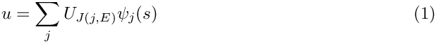
while the mapping between local and global coordinates should retain the form
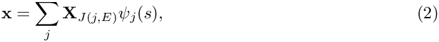
where the sums are taken over the nodes  of the element. 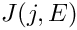 represents the global node number of local node in element and 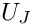 and 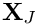 represent the function value at and the position vector to global node
of the element. 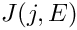 represents the global node number of local node in element and 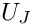 and 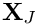 represent the function value at and the position vector to global node  , respectively. To ensure inter-element continuity of and 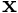, we constrain the nodal values and positions of the hanging nodes so that for every hanging node we have
, respectively. To ensure inter-element continuity of and 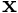, we constrain the nodal values and positions of the hanging nodes so that for every hanging node we have
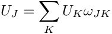
and
![\[ {\bf X}_J = \sum_{K} {\bf X}_{K} \omega_{JK} \]](form_11.png)
where the sum is taken over the hanging node's master nodes  and the
and the  are suitable weights. It is precisely this representation of the nodal positions and values that is implemented in
are suitable weights. It is precisely this representation of the nodal positions and values that is implemented in Node::value(...) and Node::position(). [Note that different nodal values can have different hanging node constraints; e.g. in Taylor-Hood elements where the pressure and velocities are interpolated by linear and quadratic basis functions.]
For simply hanging nodes (e.g. Nodes 9, 10, 14 and 15 in the above sketch) the weights are determined as follows:
- Find the neighbour element N that faces the hanging node .
- Let
 be the local coordinate of hanging node in the neighbour element N.
be the local coordinate of hanging node in the neighbour element N. - For each master node in N, the weight 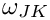 is then given by the shape function associated with master node , evaluated at , evaluated in element N.
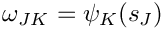
For multiply hanging nodes (Nodes 17 and 18 in the above sketch), the weights of the ultimate master nodes are determined recursively, e.g. 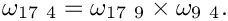
For RefineableQuadMesh meshes, the above procedures are fully implemented. Executing the function
for each element in the mesh establishes which of the elements' Nodes are hanging and determines their primary master nodes and weights. Furthermore, it pins the values at the hanging nodes – because the values are constrained, they cannot be unknowns in the problem. When this function has been executed for all elements in the mesh, the recursive elimination of hanging master nodes is performed by calling
As mentioned above, the possible occurrence of hanging nodes needs to be reflected in the element's equation numbering scheme and in the functions that compute the elemental Jacobian matrix because the element residuals now potentially depend on Nodes outside the element. Therefore, RefineableQElement<2>s must re-implement various FiniteElement member functions, e.g., by re-implementing the virtual functions
and
and various others, as specified in the RefineableQElement<2> class.
In practice, we again distinguish between the "geometry" and the "maths" by writing a general RefineablePoissonEquations<DIM> class that inherits from PoissonEquations<DIM> and re-implements the appropriate member functions.
Mesh adaptation
We can now discuss the details of the mesh adaptation process for RefineableQuadMesh meshes, although the general procedure is, in fact, generic: Once a solution has been computed, Problem::adapt() loops over all refineable submeshes, and uses their error estimator functions to compute the vector of elemental errors. The vector of errors is then passed to the submeshes'
function which performs the actual mesh adaptation and entails the following steps:
- Select all elements whose error exceeds the target maximum error for refinement, provided the elements have not already been refined to the maximum refinement level.
- Select all elements whose error is smaller than the target minimum error for unrefinement, provided
- their siblings (which can be identified via (Quad)Tree procedures) can also be unrefined
- the unrefinement would not coarsen the mesh beyond the minimum refinement level.
- Now loop over all elements in the mesh (traversing through the leaves of the
QuadTreeForest) and split those elements that are targeted for refinement. This involves the following steps:- Create new
RefineableElementsof the same type as the father element. - Create new
QuadTrees— as in the original setup, we pass the pointers to the newly createdRefineableElementsto theQuadTreeconstructors to establish the association between eachQuadTreeand itsRefineableElement. - Declare the newly created
QuadTreesto be the sons of the currentQuadTree. This transforms the currentQuadTreeinto a "non-leaf node" in theQuadTreeForest. Note that theRefineableElementis not deleted when it is split – it retains its full functionality (e.g. its pointers to itsNodes, etc). This ensures that the element is fully functional should its sons become scheduled for unrefinement at a later stage. Note that in cases when theNodesare not uniformly-spaced, certainNodesin the father will not be used by the sons. TheseNodeswill be marked as obsolete and deleted from theMesh. The pointers to theseNodesmust be set to NULL in the father element, but this cannot be done until after the hanging node procedures have been completed, see below.
- Create new
- The newly-created elements now exist (and are accessible via the leaves of the
QuadTreeForest) but they have not been ‘built’ i.e. they do not have pointers toNodesetc. We now loop over the "leaf nodes" in theQuadTreeForestand execute the virtual functionfor all newly created elements. In the specific case of a 2DRefineableElement::build()QuadMesh, theRefineableQElement<2>::build()function will be called. [Note: Elements that have not been built yet are identified by the fact that the entries in theirNode_ptvector point to NULL. All other elements are ignored by theRefineableElement::build()function.]
TheRefineableElement::build()function establishes the element's pointers to itsNodesand creates newNodesas and when required: someNodeswill already have existed in the old mesh; some newNodesmight already have been created by a neighbouring element, etc. If a newNodeneeds to be created, it is allocated with the element'sFiniteElement::construct_node(...)orFiniteElement::construct_boundary_node(...)functions. By default, the current and previous positions of the newNodesare determined via the father element's geometric mapping. However, rather than referring directly toQElement::interpolated_x(...), we determine the position withwhich determines the nodal positions based on the father element's macro-element representation if it exists; see section Domains and Macro Elements for a discussion of macro elements for mesh refinement in domains with curvilinear boundaries.FiniteElement::get_x(...)
By default, all values at a newly createdNodeare free (not pinned). If a newNodeis located on the edge of the father element, we apply the same boundary conditions (if any) that apply along the father element's edge.
If aNodelies on aMeshboundary, we add it to theMesh's storage scheme forBoundaryNodes.
Finally, the values (and the history values) at the newly createdNodesmust be assigned. This is done by using the interpolated values from the father element. Since the way in which values are interpolated inside an element is element-specific (e.g. in Taylor-Hood Navier-Stokes elements, different interpolations are used for the pressure and for the velocities), interpolated values are obtained from a call to the father element'sfunction which returns the vector of interpolated values (or history values) at a given local coordinate. This pure virtual function must be implemented for every specificRefineableQElement<2>::get_interpolated_values(...)RefineableElement.
At this point, the generic steps in the build process are completed, but many particularRefineableElementsnow require further build operations. For instance, in Crouzeix-Raviart Navier-Stokes elements, the pressure interpolation is not based on nodal values but on internalDatawhich must be suitably initialised. For this purpose, we provide the interfacewhich is executed at the end ofRefineableElement::further_build(...)RefineableElement::build(...)and can be used to perform any element-specific further build operations. - All new
Nodesand elements have now been created. In the course of the mesh refinement, some of the previously existingNodesthat are (still) marked as hanging might have become non-hanging. Therefore, we now update the hanging nodes' values and coordinates so that their entries are consistent with their current hanging-node constraints and then reset their hanging-node status to non-hanging. Finally, we free (unpin) their nodal values. The hanging-node status of allNodeswill be re-assessed later, when the de-refinement phase is completed. - Now we loop over all "nodes" in the
QuadTreeForest. If the sons of any "non-leaf node" in theQuadTreeForestare scheduled for de-refinement, we merge them into their father element. This entails the following steps:- First we execute the father element's member function, which can be used, e.g., to determine suitable values for the father element's internalRefineableElement::rebuild_from_sons()
Datafrom the values of its sons. In addition, if any of the father'sNodeshave been deleted during refinement, they must be re-created during the merge procedure. - Next, we 'unbuild' the son elements by marking those of its
Nodesthat do not exist in their father element as obsolete (this classification can later be over-ruled by other elements that need to retain theNode). - Now we delete the son
RefineableElementsand the associatedQuadTreesand empty the father element's vector of pointers to its sons. This (re)turns the father element into a fully functional element.
- First we execute the father element's
- Next, we empty the
Mesh::Element_ptvector and refill it with the currently active elements which are accessible via theQuadTreeForest's "leaf nodes". - Now we loop over all elements in the
Mesh::Element_ptvector and mark theirNodesas non-obsolete. - We then update the
Nodeshanging node status and adjust the nodal positions and values of the hanging nodes to make them consistent with the current hanging-node constraints. - We loop over all non-leaf elements in the
QuadTreeForestand call theirdeactivate_object()function, which setsFiniteElement::Node_pt[n] to zero for any obsoleteNodes. AnyNodesin theMesh::Node_ptvector that are still labelled as obsolete are truly obsolete and are deleted by callingMesh::prune_dead_nodes() - Finally, in order to facilitate dump and restart operations we sort the
Nodesinto a standard order usingMesh::reorder_nodes()
Mesh adaptation in domains with curved boundaries
The mesh refinement procedures outlined above are perfectly adequate for meshes in polygonal domains. In such meshes the generation of the new nodal positions and the transfer of the solution from the old to the new mesh can be performed by simple interpolation, using the ‘father’ element's geometric mapping and shape functions. However, in problems with curvilinear mesh boundaries we must ensure that the refined meshes provide a progressively more accurate representation of the curvilinear domain boundary.
To facilitate these steps, we now introduce the concept of GeomObjects, Domains and MacroElements, which allow a convenient and generic representation of domains that are bounded by time-dependent and/or curvilinear boundaries.
Geometric Objects
Here are two examples of curvilinear boundaries that are frequently encountered in computations on moving domains:
- In many problems the boundary
 of the moving domain 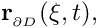 is given explicitly in terms of a position vector
of the moving domain 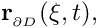 is given explicitly in terms of a position vector
where![\[ {\bf r}_{_{\partial D}}(\boldmath{\xi},t), \]](form_20.png)
 is the (continuous) time and the components of the vector 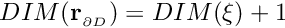 parametrise the boundary. We have 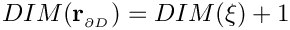. For instance, the surface of a cylinder
is the (continuous) time and the components of the vector 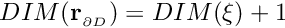 parametrise the boundary. We have 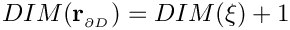. For instance, the surface of a cylinder  with time-dependent radius 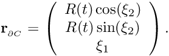 can be represented as
with time-dependent radius 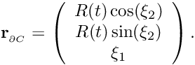 can be represented as 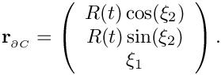
- In fluid problems with free surfaces or in fluid-structure interaction (FSI) problems, the domain boundary might have to be determined as part of the solution. In such cases, the boundary will have some computational representation. For instance, in an FSI computation in which a shell structure bounds the fluid domain, each shell finite element defines a small part of the fluid domain boundary and the shell element's local coordinates provide a parametrisation of some part of the boundary in a form similar to the one shown above.
The common feature of these two examples is that, in both cases, the boundary is represented by a parametrised position vector. The GeomObject base class provides an abstract interface for such situations. In its most basic form, a ‘geometric object’ simply provides a parametrisation of its shape by implementing the GeomObject's pure virtual member function
which computes the position vector r at the coordinates specified by the vector xi. GeomObject also provides a large number of additional interfaces in the form of (broken) virtual functions. The most important of these is the time-dependent version of the above function
which computes the position vector r at the coordinates specified by the vector xi at the previous discrete time level t. We follow the usual convention that
- for
t=0the vectorris the position vector at the current time,time = Time::time() = Time::time(0) - for
t=1it represents the position at the previous (discrete) time levelt, i.e. at the continuous timetime = Time::time() - Time::dt() = Time::time(1) - etc.
By default, the virtual member function GeomObject::position(xi,t,r) calls the steady version GeomObject::position(xi,r), so it only needs to be overloaded for genuinely time-dependent geometric objects (by default, the code execution terminates if the time-dependent version is called for 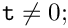 the function needs to be overloaded if this is not appropriate).
Further virtual member functions provide interfaces for the determination of the first and second spatial and temporal derivatives of the position vector, allowing the computation of boundary velocities, accelerations and curvatures, etc. These interfaces are provided as broken virtual functions, so they only need to be overloaded if/when the functionality is actually required in a particular application.
Typically, the shape of a GeomObject depends on a certain number of parameters (in the above examples, the radius 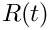 of the cylinder and the displacements of the shell element, respectively) which can be unknowns in the problem. We therefore store these parameters as (geometric) Data, whose values can be pinned or free.
Domains and Macro Elements
For the purposes of mesh generation, we represent curvilinear domains by objects that are derived from the base class Domain and use GeomObjects to represent the curvilinear boundaries. For instance, the QuarterCircleSectorDomain sketched in the figure below is bounded by the geometric object Ellipse that parametrises the domain's curved boundary, shown in red.
Consider the coarse discretisation of the domain shown in the Fig. (a) and assume that element 2 (a four-node quad element from the QElement family) is scheduled for refinement into four son elements. As discussed above, by default the Nodes of the son elements are established/created as follows:
- If a
Nodealready exists in the father element we store the pointer to the existingNodein the son element'sNode_ptvector. - If a
Nodeneeds to be created, we determine its position from the geometric mapping of the father element. Thus the five newNodesthat need to be created when element 2 is refined, are placed at their father element's (i.e. element 2's) local coordinates (0,0), (0,1), (0,-1), (1,0) and (-1,0). The father element'sdetermines the nodal position via a call toRefineableQElement<2>::get_x(...)QElement::interpolated_x(...). Similarly, the nodal values of the newNodesare determined by using the interpolated values in the father element.

For the element 0, this procedure would be perfectly adequate, as the domain boundary after refinement would (still) be captured exactly. However, when refining element 2 by this procedure, the new Node on the boundary is positioned on the straight line between the two boundary Nodes in the father element and not on the curved boundary itself, as shown in Fig. (b). Hence repeated mesh refinement will not lead to a better representation of the domain geometry and preclude convergence to the exact solution.
To overcome this problem, objects of type Domain provide a decomposition of the domain into a number of so-called MacroElements, as sketched in Fig. (c). Boundaries of the MacroElements are either given by (parts of) the (exact) curvilinear boundaries (as specified by the Domain's GeomObjects) or by (arbitrary and usually straight) internal edges (or, in 3D, faces). In 2D, MacroElements provide a mapping 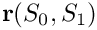 from a local coordinate system 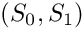, with 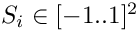, to the points inside the MacroElement via their member function
The mapping needs to be chosen such that for ![$ S_1\in [-1..1]$](form_32.png) the position vector 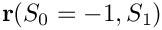 sweeps along the ‘southern’ edge of the
the position vector 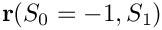 sweeps along the ‘southern’ edge of the MacroElement, etc.; see Fig. (e). The form of the macro-element mapping is obviously not unique and it depends on the MacroElement's topology. The class QMacroElement<2> provides a mapping that is suitable for 2D quadrilateral elements and can therefore be used with RefineableQElement<2> s.
The constructors for objects of type Domain typically require a vector of pointers to the GeomObjects that define its boundaries. The Domain constructor then usually employs function pointers to the GeomObject::position(...) function to define the MacroElement boundaries. Once built, the MacroElements are accessible via the member function
We illustrate the macro-element based mesh generation and adaptation process for the case of RefineableQuadMesh meshes. Assume that the domain is represented by an object of type Domain. We build a coarse initial mesh which contains as many RefineableQElement<2>s as there are QMacroElements in the Domain. We associate each RefineableQElement<2> with one of the QMacroElements by storing a pointer to the QMacroElement in FiniteElement::Macro_elem_pt. Next, we use the QMacroElements' macro map to determine the RefineableQElement<2>'s nodal positions such that, e.g., the RefineableQElement<2>'s SW node is placed at the QMacroElement 's local coordinates 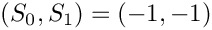, etc. The fraction of the QMacroElement that is spanned by each RefineableQElement<2> is represented by the maximum and minimum values of the QMacroElement's local coordinates; the RefineableQElement<2> constructor initially sets these values to the defaults of +1.0 and -1.0, respectively, indicating that the RefineableQElement<2> spans the entire area of the corresponding QMacroElement.
With this additional information, we modify the
RefineableQElement<2>::build() process as follows:
- After creating the son elements, we set their
FiniteElement::Macro_elem_ptto that of their father. - We adjust the son's maximum and minimum
MacroElementcoordinates so that they span the appropriate fraction of theMacroElement. For instance, for the SW son element of element 2 in the above sketch, we set 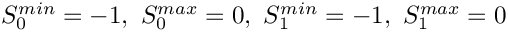. Should this element get refined again, we set its NW son element's coordinates to 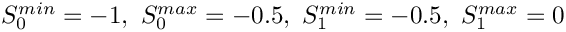, etc. - The nodal positions of newly created
Nodesare determined via calls to the father element'sRefineableQElement<2>::get_x(...)function. If the father element is associated with aMacroElement(indicated by a non-NULLRefineableQElement<2>::Macro_elem_ptpointer), this function does not refer toQElement::interpolated_x(...)(i.e. the FE mapping) but places the newNodeat the appropriate point inside the father'sMacroElement. This ensures thatNodesthat are created on theMeshboundaries get placed on theDomainboundary, as shown in Fig. (d). - In time-dependent, moving mesh problems, the history of the new
Nodes'position is established by calls to the time-dependent version of theMacroElement::macro_map(...)function, which in turn refers to the time-dependentGeomObject::position(...)function of theGeomObjectsthat define theDomainboundaries. Hence for all newNodes,Node::x(t,i)fort>0, returns the position theNodewould have had if it had already existed at the previous time level t. - We retain the original procedure for initialising the current and previous values at the new
Nodesand continue to determine them by interpolation from the father element, based on the father element's local coordinates. (We cannot determine the function values at the exact new nodal positions because newNodescan be located outside their father elements.)
Macro-element-based node updates in moving mesh problems
Once a Mesh is associated with a Domain, the function Mesh::node_update() updates the nodal positions in response to a change in the shape of the GeomObjects that define the Domain boundaries. [Note: This function updates all nodal positions first and then updates the positions of the hanging nodes to subject them to the hanging node constraints.] Alternative procedures for the update of the nodal positions in response to changes in the domain boundary are implemented in the AlgebraicMesh, SpineMesh and SolidMesh classes.
PDF file
A pdf version of this document is available. \